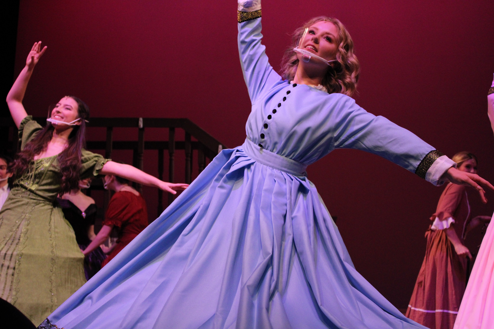
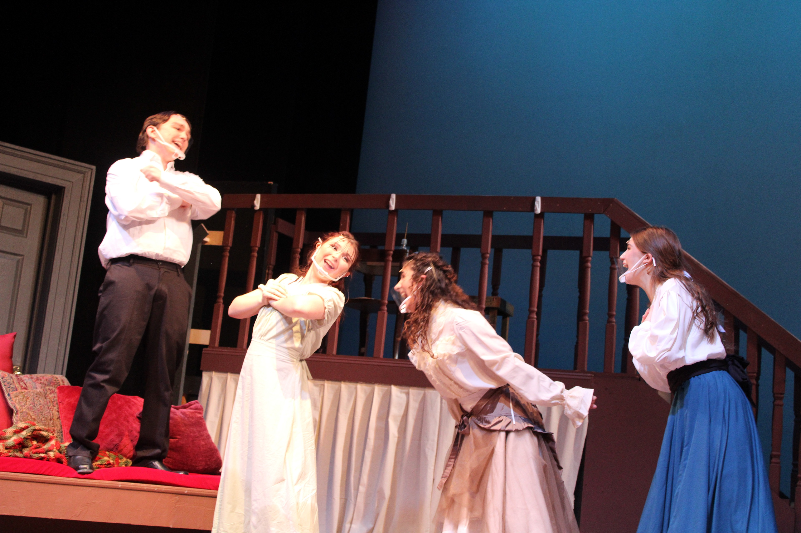
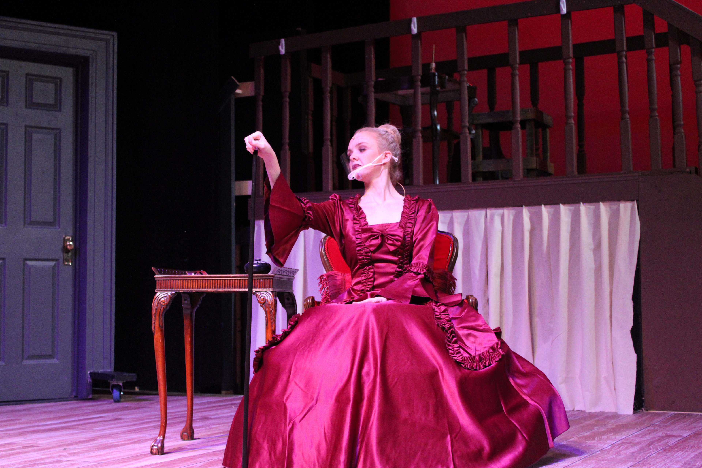
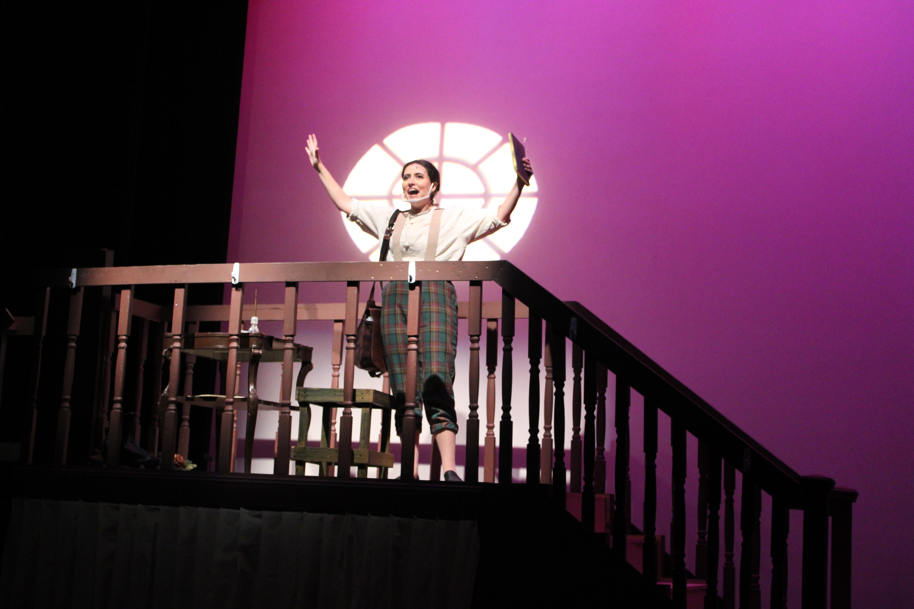
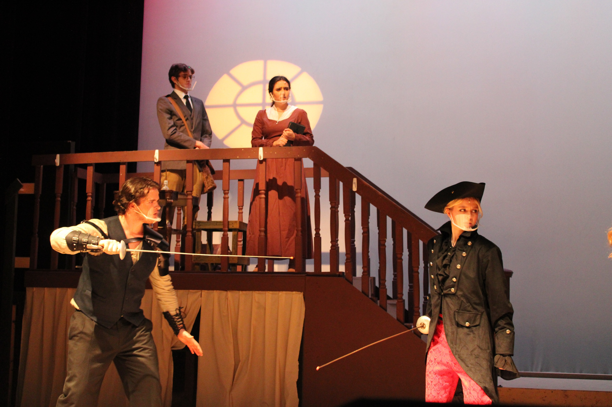
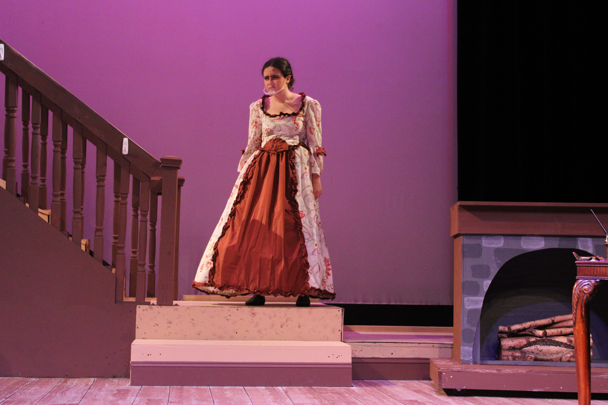
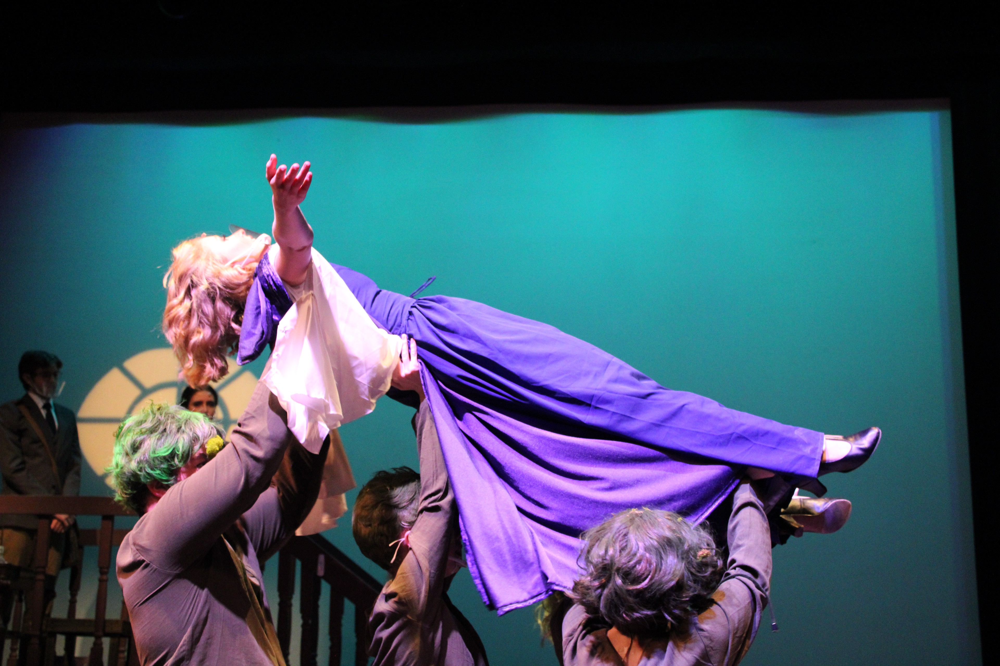
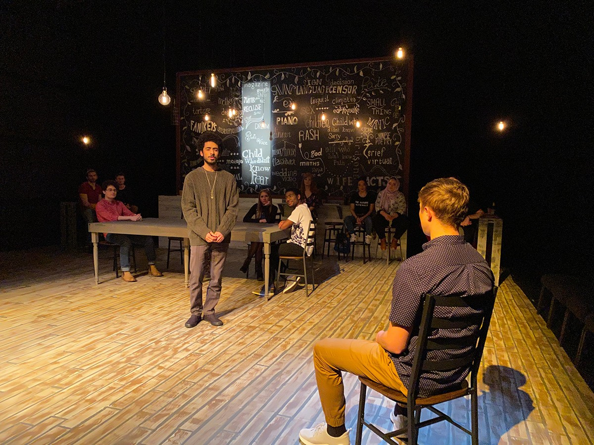

1. Spatial Philosophy in Live Theatre
Before designing digital interfaces, my foundation in human-centered spatial experiences began in physical theatre. A stage set is an interactive environment: it shapes how actors move, dictates sightlines for the audience, and establishes atmospheric emotional context through texture, color, and depth.
Working extensively in black box spaces—particularly the Don Evans Black Box Theatre—requires intentional, multi-angle ergonomic consideration. Unlike a traditional proscenium arch where the audience views action from a single plane, black box staging places spectators within feet of the set, demanding meticulous finish, authentic materials, and structural safety.
2. Featured Lead Set Designs
Little Women
TCNJ Musical Theatre · Fall 2021 · Lead Set DesignerLouisa May Alcott's renowned Little Women was heavily inspired by the original Orchard House in Concord and performed in the Don Evans Black Box Theatre. The set balanced warm domestic intimacy with flexible multi-level acting zones, enabling rapid seamless transitions between the March family parlor, the attic writing haven, and European travel locales.

Love & Information
All College Theatre · Spring 2020 · Lead Set DesignerCaryl Churchill's play Love & Information lives in a relaxed, modern coffee shop and was played in the Don Evans Black Box Theatre. The modular scenic design accommodated over 50 rapid-fire vignettes exploring modern connectivity, isolation, and digital information overload.

Hay Fever
All College Theatre · Fall 2019 · Lead Set DesignerNoël Coward's Hay Fever is set in the living room of the eccentric Bliss family's country home and is entirely staged in the Don Evans Black Box Theatre. The set emphasized dramatic farce entrances, French doors leading to a lush garden exterior, and bohemian artistic clutter that mirrored the family's self-absorbed theatricality.

3. Production Photography Gallery
Additional documentation from professional summer stock theatre at the Peterborough Players in New Hampshire and university mainstage seasons at TCNJ:






4. Complete Theatrical Production Credits
| Season | Production | Role | Company / Venue |
|---|---|---|---|
| Fall 2021 | Spoon River: An Elegy Lead | Set Designer | All College Theatre |
| Fall 2021 | Little Women Lead | Set Designer | TCNJ Musical Theatre |
| Summer 2021 | Where You Are | Scenic Shop Intern | Peterborough Players |
| Summer 2021 | Beehive: The 60s Musical | Deck Crew | Peterborough Players |
| Summer 2021 | Our Town | Electrics / Board Operator | Peterborough Players |
| Spring 2020 | The Wedding Singer Lead | Set Designer | TCNJ Musical Theatre |
| Spring 2020 | Games of Love | Assistant Stage Manager | All College Theatre |
| Spring 2020 | Love and Information Lead | Set Designer | All College Theatre |
| Spring 2020 | Hay Fever Lead | Set Designer | All College Theatre |
| Spring 2019 | Into the Woods | Assistant Set Designer | TCNJ Musical Theatre |
| Spring 2019 | A Festival of One Acts | Assistant Production Manager | All College Theatre |
| Spring 2019 | She Kills Monsters | Assistant Set Designer | All College Theatre |
| Fall 2018 | Top Shelf | Sound Designer | All College Theatre |
| Fall 2018 | Little Shop of Horrors | Assistant Set Designer | TCNJ Musical Theatre |
| Fall 2018 | Twelfth Night | Assistant Sound Designer | All College Theatre |